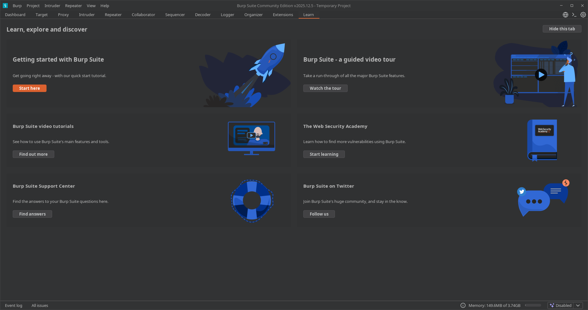

13. Learn
📌 Propósito Operativo del Módulo
La pestaña Learn es el portal educativo nativo integrado en Burp Suite. Su función principal no es interactuar con el tráfico de red de un objetivo, sino actuar como un nexo directo con la PortSwigger Web Security Academy, la plataforma de entrenamiento interactivo de seguridad web de la empresa.
Durante el proceso de formación o en medio de una auditoría, el analista puede necesitar consultar rápidamente la teoría detrás de una vulnerabilidad recién descubierta (como un desvío de CORS o un ataque de deserialización). Este módulo centraliza accesos directos a laboratorios interactivos, artículos técnicos y guías paso a paso, permitiendo al usuario capacitarse o refrescar metodologías de explotación directamente desde la consola del software de ataque.
🎛️ 1. Interfaz y Distribución de Enlaces Formativos
El panel de Learn está estructurado como un índice visual interactivo dividido en categorías temáticas de aprendizaje.

A. Acceso a la Academia (Web Security Academy)
- Explore the Web Security Academy: Enlace principal que redirige al navegador del sistema hacia el portal de laboratorios gratuitos de PortSwigger. Permite resolver retos de inyecciones, fallos lógicos y vulnerabilidades de infraestructura bajo entornos controlados.
- Sección "Learning Paths": Agrupa y organiza las vulnerabilidades por su naturaleza técnica para que el auditor pueda estudiar de forma estructurada (ej: Fundamentos Web, Vulnerabilidades del Lado del Servidor o Fallos del Lado del Cliente).
B. Desglose Temático de Documentación Técnica
El panel lista las principales clases de fallos del top de seguridad web (como el OWASP Top 10), proporcionando enlaces directos a sus definiciones teóricas y cheatsheets de explotación: * SQL Injection (SQLi): Conceptos, técnicas de exfiltración e inyecciones a ciegas. * Cross-Site Scripting (XSS): Vectores reflejados, almacenados y basados en DOM. * Cross-Origin Resource Sharing (CORS): Errores de configuración en las políticas de compartición de recursos en navegadores. * XML External Entity (XXE): Manipulación de analizadores de datos y exfiltración Out-of-Band (OOB).
🚀 2. Casos Prácticos de Uso en el Flujo de Trabajo
Caso 1: Consulta Teórica Rápida en Medio de un Pentest (Refresco Metodológico)
Estás utilizando el módulo Proxy y detectas que una aplicación web está utilizando plantillas dinámicas en el servidor, lo que te hace sospechar de una vulnerabilidad de Server-Side Template Injection (SSTI). No recuerdas la sintaxis exacta para comprobar si el backend corre sobre Jinja2 o Thymeleaf.
* Solución operativa: Vas a la pestaña Learn, localizas la sección dedicada a Server-Side Template Injection y haces clic en ella. Burp Suite te abrirá la documentación técnica oficial de PortSwigger con los árboles de decisión y los payloads iniciales de verificación (como ${7*7} o {{7*7}}) para que puedas copiarlos y probarlos de inmediato en Repeater.
Caso 2: Entrenamiento Práctico y Replicación de Escenarios
Deseas dominar una vulnerabilidad compleja y avanzada como HTTP Request Smuggling, pero no tienes un entorno real o seguro donde realizar las pruebas de desincronización de peticiones sin romper los servicios de un cliente. * Solución operativa: Utilizas la pestaña Learn para saltar directamente a la Web Security Academy. Buscas el laboratorio específico de HTTP Request Smuggling, lo activas y configuras tu Burp Suite para interactuar con dicho laboratorio. Esto te permite entrenar y validar tus payloads en un entorno de pruebas controlado y legal antes de enfrentarte a esa vulnerabilidad en una auditoría de infraestructura real.